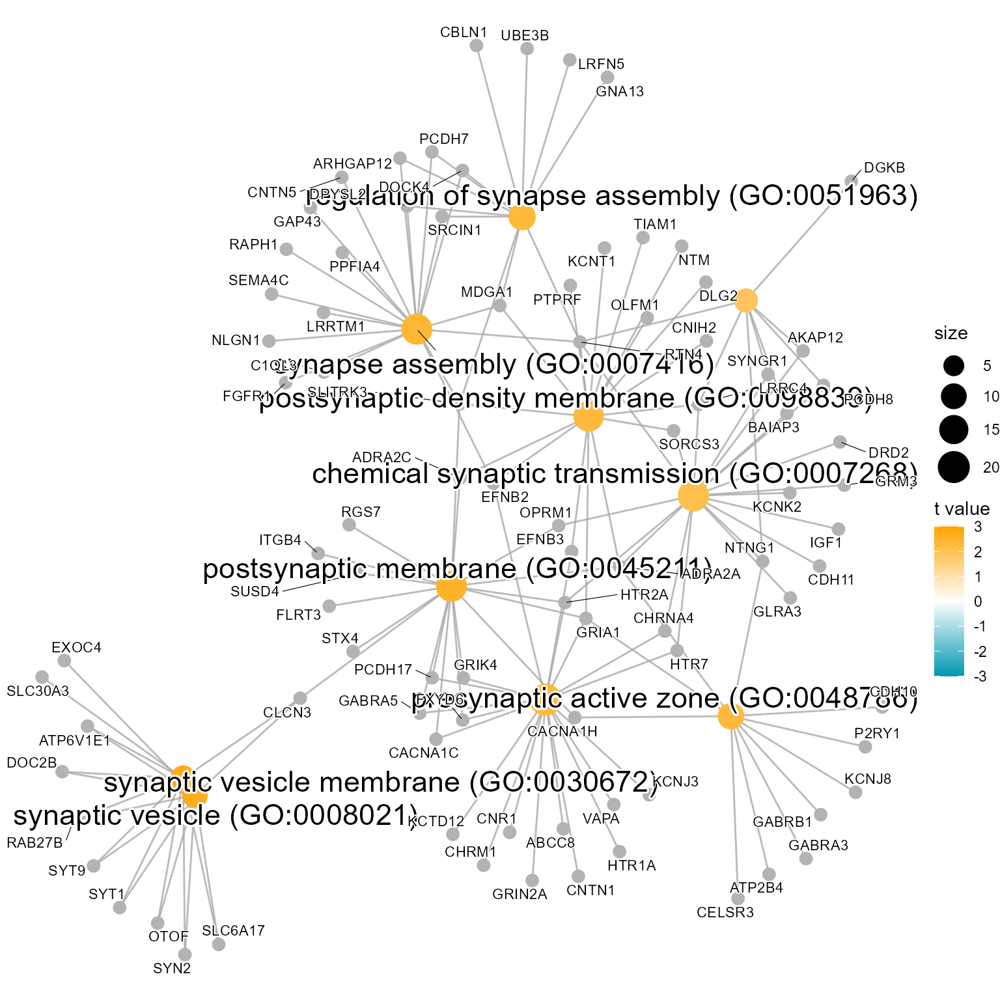
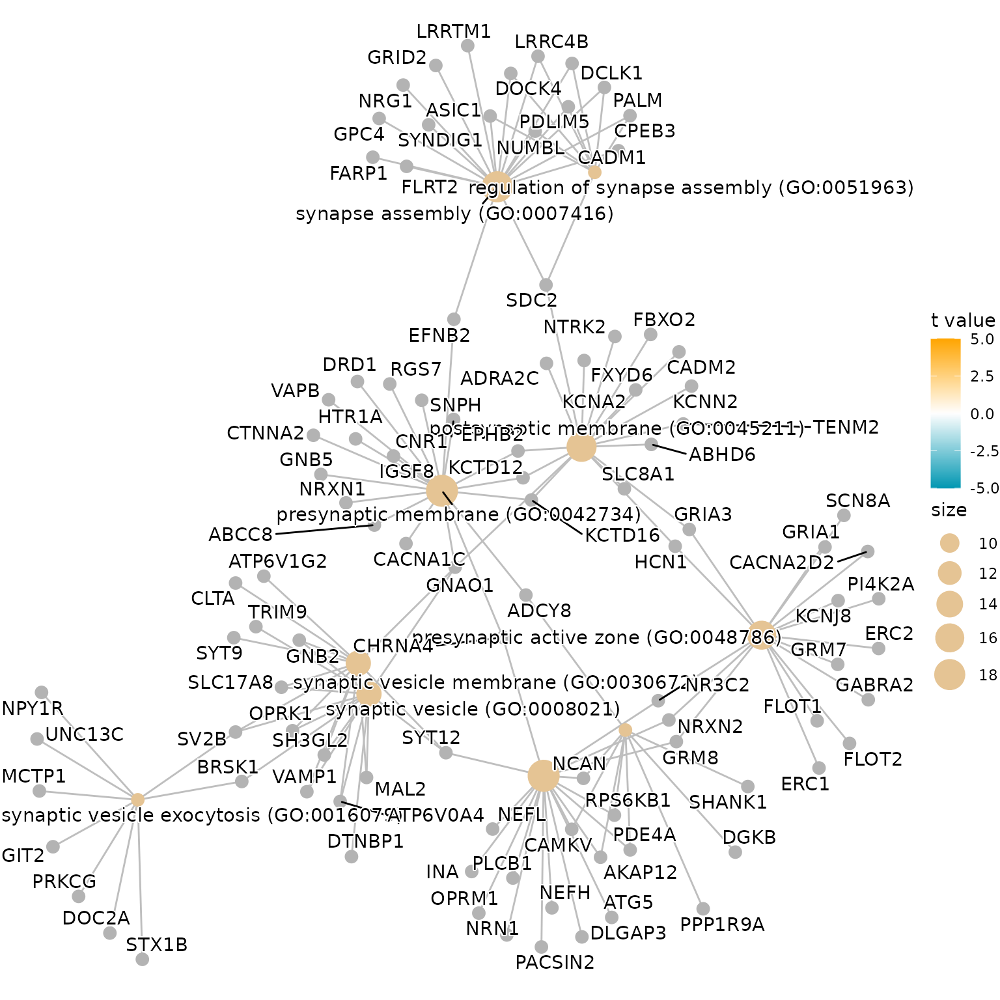

Enrichment analysis of individual-level IDPs
brainscore_demo.RmdIntroduction
This tutorial demonstrates how to perform enrichment analysis of individual-level imaging-derived phenotypes (IDPs) using the BrainEnrich package.
1. Prepare Data for the Analysis
In this section, we will prepare the data needed for enrichment analysis. The data is simulated from the HCP dataset, and we’ll be using various pre-defined gene sets from GO-MF and brain data for analysis.
1.1. Load sample data frame. The data is simulated from HCP data.
The data is simulated from HCP data. Let’s load and inspect it.
data(sample_df)
str(sample_df)
#> 'data.frame': 100 obs. of 37 variables:
#> $ L_bankssts : num 2.44 2.46 2.36 2.59 2.35 ...
#> $ L_caudalanteriorcingulate : num 2.57 2.29 2.67 2.84 2.14 ...
#> $ L_caudalmiddlefrontal : num 2.58 2.53 2.85 2.85 2.32 ...
#> $ L_cuneus : num 2.01 1.98 1.85 1.89 1.93 ...
#> $ L_entorhinal : num 3.37 3.47 2.77 3.19 2.73 ...
#> $ L_fusiform : num 2.73 2.67 2.5 2.67 2.44 ...
#> $ L_inferiorparietal : num 2.45 2.43 2.53 2.62 2.39 ...
#> $ L_inferiortemporal : num 2.68 2.98 2.69 2.92 2.6 ...
#> $ L_isthmuscingulate : num 2.46 2.18 2.82 2.24 2.66 ...
#> $ L_lateraloccipital : num 2.23 2.26 2.33 2.17 2.05 ...
#> $ L_lateralorbitofrontal : num 2.67 2.67 2.9 2.68 2.54 ...
#> $ L_lingual : num 2.01 2.16 1.99 2.09 2.05 ...
#> $ L_medialorbitofrontal : num 2.18 2.54 2.46 2.33 2.16 ...
#> $ L_middletemporal : num 2.86 2.91 2.77 3.05 2.82 ...
#> $ L_parahippocampal : num 2.65 3.02 2.39 2.66 3.1 ...
#> $ L_paracentral : num 2.47 2.37 2.46 2.65 2.35 ...
#> $ L_parsopercularis : num 2.48 2.7 2.89 2.73 2.46 ...
#> $ L_parsorbitalis : num 2.81 2.75 2.99 2.99 2.47 ...
#> $ L_parstriangularis : num 2.43 2.61 2.75 2.46 2.32 ...
#> $ L_pericalcarine : num 1.67 1.91 1.8 1.73 1.79 ...
#> $ L_postcentral : num 2.16 2.1 2.17 2.22 2.14 ...
#> $ L_posteriorcingulate : num 2.37 2.32 2.76 2.64 2.29 ...
#> $ L_precentral : num 2.61 2.65 2.79 2.67 2.47 ...
#> $ L_precuneus : num 2.37 2.3 2.39 2.5 2.24 ...
#> $ L_rostralanteriorcingulate: num 2.25 3 3.01 2.63 2.42 ...
#> $ L_rostralmiddlefrontal : num 2.44 2.42 2.63 2.58 2.23 ...
#> $ L_superiorfrontal : num 2.81 2.76 2.91 2.97 2.57 ...
#> $ L_superiorparietal : num 2.22 2.18 2.29 2.36 2.11 ...
#> $ L_superiortemporal : num 2.75 3.1 2.63 2.81 2.86 ...
#> $ L_supramarginal : num 2.65 2.55 2.56 2.63 2.51 ...
#> $ L_frontalpole : num 2.92 2.8 2.93 3.26 2.7 ...
#> $ L_temporalpole : num 4.05 3.5 3.92 3.11 3.2 ...
#> $ L_transversetemporal : num 2.59 2.8 2.26 2.61 2.61 ...
#> $ L_insula : num 2.94 2.94 3 3.18 2.74 ...
#> $ Age : int 36 36 29 24 31 28 29 29 26 25 ...
#> $ Sex : Factor w/ 2 levels "0","1": 1 1 1 2 2 2 1 1 1 2 ...
#> $ BMI : num 25.2 24.9 23 26 25.4 ...
colnames(sample_df)
#> [1] "L_bankssts" "L_caudalanteriorcingulate"
#> [3] "L_caudalmiddlefrontal" "L_cuneus"
#> [5] "L_entorhinal" "L_fusiform"
#> [7] "L_inferiorparietal" "L_inferiortemporal"
#> [9] "L_isthmuscingulate" "L_lateraloccipital"
#> [11] "L_lateralorbitofrontal" "L_lingual"
#> [13] "L_medialorbitofrontal" "L_middletemporal"
#> [15] "L_parahippocampal" "L_paracentral"
#> [17] "L_parsopercularis" "L_parsorbitalis"
#> [19] "L_parstriangularis" "L_pericalcarine"
#> [21] "L_postcentral" "L_posteriorcingulate"
#> [23] "L_precentral" "L_precuneus"
#> [25] "L_rostralanteriorcingulate" "L_rostralmiddlefrontal"
#> [27] "L_superiorfrontal" "L_superiorparietal"
#> [29] "L_superiortemporal" "L_supramarginal"
#> [31] "L_frontalpole" "L_temporalpole"
#> [33] "L_transversetemporal" "L_insula"
#> [35] "Age" "Sex"
#> [37] "BMI"1.2. prepare brain_data for scoring
Next, we’ll prepare the brain data by selecting the relevant columns and transforming the data for scoring.
brain_data <- dplyr::select(sample_df, starts_with("L_")) %>% t()
colnames(brain_data) <- paste0("sub-", 1:ncol(brain_data))
str(brain_data)
#> num [1:34, 1:100] 2.44 2.57 2.58 2.01 3.37 ...
#> - attr(*, "dimnames")=List of 2
#> ..$ : chr [1:34] "L_bankssts" "L_caudalanteriorcingulate" "L_caudalmiddlefrontal" "L_cuneus" ...
#> ..$ : chr [1:100] "sub-1" "sub-2" "sub-3" "sub-4" ...1.3. Load gene expression data for the Analysis
We will now load gene expression data for the analysis. This data is based on a specific brain atlas (Desikan) and includes gene expression levels (correlation across donnors > 0.4) for the left hemisphere.
gene_data <- get_geneExp(atlas = "desikan", rdonor = "r0.4", hem = "L")
str(gene_data)
#> num [1:34, 1:6513] 0.469 0.607 0.512 0.341 0.664 ...
#> - attr(*, "dimnames")=List of 2
#> ..$ : chr [1:34] "L_bankssts" "L_caudalanteriorcingulate" "L_caudalmiddlefrontal" "L_cuneus" ...
#> ..$ : chr [1:6513] "A1BG" "A1BG-AS1" "AACS" "AADAT" ...1.4. Load SynGO for the Analysis
We will load SynGO terms that will be used in the enrichment analysis. This data represents gene sets associated with various molecular functions.
annoData <- get_annoData(type = "SynGO")
geneSetList <- get_geneSetList(annoData)
length(geneSetList)
#> [1] 302
print(sprintf("Number of SynGO terms: %d", length(geneSetList)))
#> [1] "Number of SynGO terms: 302"Filter the geneSetList (Optional)
Filtering the gene sets by size is optional and is shown here for demonstration purposes. This step is embedded in the brainenrich/brainscore function.
selected.gs <- filter_geneSetList(bg_genes = colnames(gene_data), geneSetList = geneSetList, minGSSize = 20, maxGSSize = 200)
print(sprintf("%d MF terms have gene size ranging between 20 and 200", length(selected.gs)))2. Get gene set scores using brainscore
In this section, we will run the individual enrichment analysis using the prepared data.
2.1. get the raw (empirical) score of the brain_data
(null_model='none')
We calculate the gene set scores for the brain data without using any null model.
gsScore.raw <- brainscore(
brain_data = brain_data,
gene_data = gene_data,
annoData = annoData,
cor_method = "pearson",
aggre_method = "mean",
n_cores = 0,
minGSSize = 20,
maxGSSize = 200,
null_model = "none"
)
str(head(gsScore.raw))
#> List of 6
#> $ GO:0007268: num [1:100] -0.00558 0.065401 0.039357 0.000975 0.031618 ...
#> $ GO:0007416: num [1:100] 0.0436 0.1186 0.0812 0.0398 0.0731 ...
#> $ GO:0008021: num [1:100] 0.152 0.208 0.217 0.199 0.165 ...
#> $ GO:0016079: num [1:100] -0.0882 -0.0521 -0.0869 -0.0934 -0.0353 ...
#> $ GO:0030285: num [1:100] 0.0501 0.0904 0.136 0.132 0.0852 ...
#> $ GO:0030672: num [1:100] 0.177 0.231 0.244 0.234 0.186 ...The gsScore.raw is a list of molecular terms. For each molecular term, you can find individual gene set scores and use them for downstream analyses (e.g., correlation analysis, machine learning, clustering etc.).
2.2. Get the null score of the brain_data
(null_model='spin_brain')
Next, we will calculate the null scores using the ‘spin_brain’ null model.
gsScore.spin <- brainscore(
brain_data = brain_data,
gene_data = gene_data,
annoData = annoData,
cor_method = "pearson",
aggre_method = "mean",
n_cores = 0,
minGSSize = 20,
maxGSSize = 200,
null_model = "spin_brain",
n_perm = 5,
perm_id = perm_id_dk_lh_5000
)
str(head(gsScore.spin, 5), 1)
#> List of 5
#> $ null_1:List of 55
#> $ null_2:List of 55
#> $ null_3:List of 55
#> $ null_4:List of 55
#> $ null_5:List of 55The result is a list of lists. Each sublist contains null scores for the molecular terms (i.e. SynGO terms). This is useful for permutation tests, where you compare the observed results (e.g., correlation) with your dependent variable between empirical gsScore and null model gsScore.
2.3. Get the null score of the resample_gene
(set null_model='resample_gene')
gsScore.resample <- brainscore(
brain_data = brain_data,
gene_data = gene_data,
annoData = annoData,
cor_method = "pearson",
aggre_method = "mean",
n_cores = 0,
minGSSize = 20,
maxGSSize = 200,
null_model = "resample_gene",
n_perm = 5
)
str(head(gsScore.resample, 5), 1)
#> List of 5
#> $ null_1:List of 55
#> $ null_2:List of 55
#> $ null_3:List of 55
#> $ null_4:List of 55
#> $ null_5:List of 55The result is also a list of lists. Each sublist contains null scores for the molecular terms (i.e. SynGO terms). This is useful for permutation tests, where you compare the observed results (e.g., correlation) with your dependent variable between empirical gsScore and null model gsScore.
3. Perform linear regression between the gsScore and predictors
using brainscore.lm_test
The function brainscore.lm_test is designed to perform linear
regression tests between the gsScore and the brain data as follows:
gsScore ~ predictor + covariates. This would cover a large
proportion of the scenarios where gsScores will be used. The predictor
can be either a single numeric variable or a single two-level factor
variable. The covariates can be a data frame with multiple numeric
variables or factors. The function will first get the emprical
statistics (i.e., t-value corresponding to the predictor) and then test
that against the null model (e.g., spin_brain) to get the p-value.
Normal setup
cov_df <- sample_df %>% dplyr::select(Age, Sex)
pred_df <- sample_df %>% dplyr::select(BMI)
res <- brainscore.lm_test(
pred_df = pred_df,
cov_df = cov_df,
brain_data = brain_data,
gene_data = gene_data,
annoData = annoData,
cor_method = "pearson",
aggre_method = "mean",
n_cores = 0,
minGSSize = 50,
maxGSSize = 200,
null_model = "spin_brain",
n_perm = 5,
perm_id = perm_id_dk_lh_5000,
pvalueCutoff = 0.8
)
res.df <- as.data.frame(res)For demonstration purposes, we only performed 10 permutations and set minGSSize to 50. In practice, you may need to perform more permutations (e.g., 5000) for a more reliable p-value.
Setup with precomputed null scores
As an alternative to the previous step, you can use precomputed null scores to perform linear regression tests between the gsScore and the brain data. Generating null brain scores can be time consuming, especially when the number of permutations is high. Therefore, we recommend using precomputed null scores for the analysis. Here we used the null scores generated in Section 2.2.
res1 <- brainscore.lm_test(
pred_df = pred_df,
cov_df = cov_df,
brain_data = brain_data,
gene_data = gene_data,
annoData = annoData,
gsScoreList.null = gsScore.spin,
cor_method = "pearson",
aggre_method = "mean",
n_cores = 0,
minGSSize = 20,
maxGSSize = 200,
null_model = "spin_brain",
n_perm = 5,
pvalueCutoff = 0.8
)The attribute of the gsScoreList.null should be the same as your input of the function for these variables: cor_method, aggre_method, minGSSize, maxGSSize, null_model, n_perm, if not, that means the gsScoreList.null is not usable for the currrent setup.
4. Visualization
This section covers the visualization of the results. Note: the upsetplot, heatplot available for brainenrich resutls are not applicable for these results.
4.1. Gene-Concept Network
We will visualize the gene-concept network.
geneList <- res@geneList
showCategory <- 10
showID <- res@result$ID[1:showCategory]
show.geneList <- geneList[showID]
color_palette <- colorRampPalette(c("#0197b2", "white", "orange"))(100)
breaks <- seq(-3, 3, length.out = 101)
geneList_colors <- color_palette[cut(show.geneList, breaks = breaks, labels = FALSE)]
named_colors <- setNames(geneList_colors, names(show.geneList))
cnetplot(res,
layout = "kk",
color.params = list(category = named_colors),
showCategory = showCategory, cex.params = list(
category_node = 1, gene_node = 0.75,
category_label = 1.2, gene_label = 0.6
),
) + scale_color_gradientn(colors = color_palette, limits = c(-3, 3), name = "t value")
4.2. Dot Plot
We will create a dot plot to visualize the results.
dotplot(res, x = "t_Value", label_format = 50, showCategory = 30) +
xlab("GS score") + scale_fill_gradient(
high = "#0197b2", low = "orange",
space = "Lab", name = "p.adjusted"
)